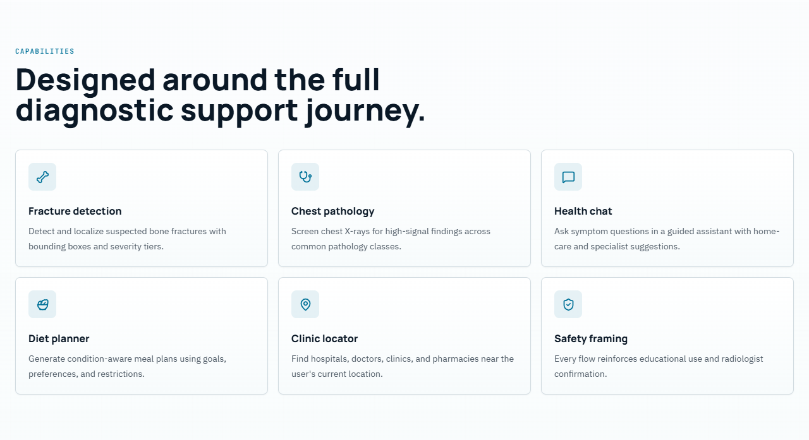
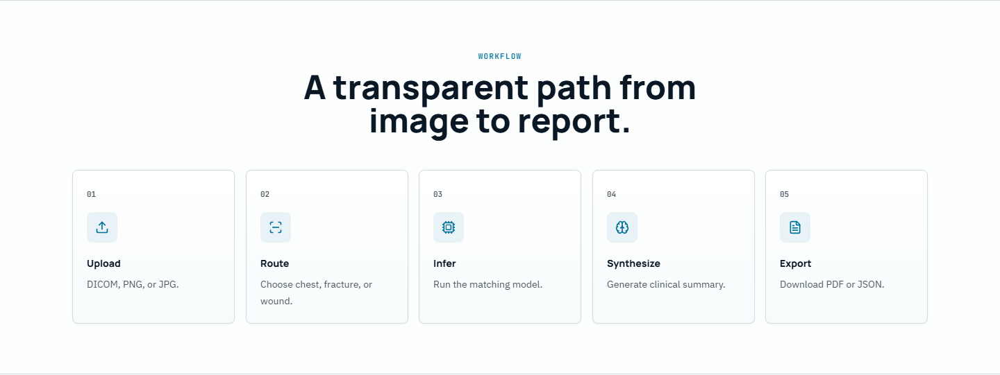
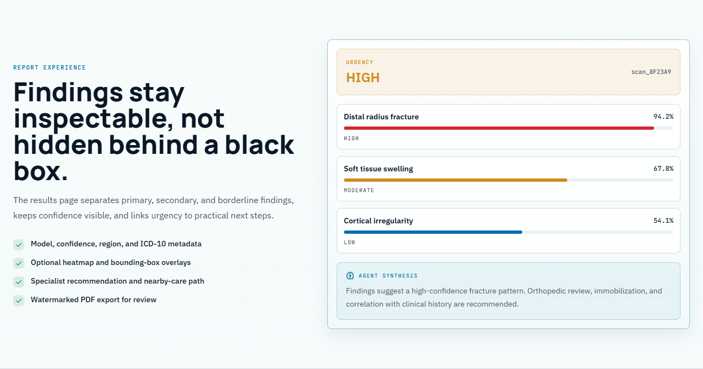

XRayVision AI — Project Documentation
Final Year Project documentation set for XRayVision AI, a full-stack medical diagnostic platform.
| Field | Value |
|---|---|
| Project title | Web-Based AI Chatbot for Automated X-Ray Fracture Detection |
| Institution | Minhaj University Lahore — School of Software Engineering |
| Programme | BSSE, 8th Semester — Final Year Project |
| Students | Muhammad Ali Raza (2022F-MUL-BSSWE-017) · Hamza Afzal (2022F-MUL-BSSWE-027) |
| Supervisor | Maam Misbah — Lecturer, School of Software Engineering |
| Product version | 2.1.0 |
| Live application | https://x-ray-vision-board.vercel.app |
The Documents
| # | Document | What it answers | Size |
|---|---|---|---|
| 0 | Handover note | Start here. What you have, the five things to do, the three things not to do, and the honest status. | 1 page |
| 1 | Software Requirements Specification | What must the system do? Scope, users, 60+ numbered functional requirements, use case model, non-functional targets, constraints. | IEEE 830 format |
| 2 | Software Design Document | How is it built? Architecture, ERD, DFDs (levels 0–2), class diagram, sequence diagrams, state diagrams, algorithms, security design, deployment. | IEEE 1016 format |
| 3 | Test Documentation | How was it verified? Test plan, environment, test data, 93 test case specifications, traceability, defect log. | IEEE 829 format |
| 4 | User Manual | How do I use it? Step-by-step guide to every feature, with screenshots from the live deployment, troubleshooting and FAQ. | End-user guide |
| 5 | Thesis | The bound submission document. Title page, certificate, declaration, abstract, eight chapters, IEEE references and four appendices — drawing on documents 1–4. | FYP thesis |
📘 For submission, use
XRayVision_AI_Thesis.docx— the thesis formatted for binding: A4, Times New Roman 12 pt, 1.5 line spacing, 1.5-inch binding margin, roman-numeral front matter, arabic body pagination, and an automatic Table of Contents field. See Printing and Binding.
📄 Every document also exists as a ready-to-open
.htmlfile in this folder with all diagrams already rendered — no editor extension required, and it prints straight to PDF. See Viewing the Diagrams.
Supporting material also in the repository:
| Document | Location |
|---|---|
| Enterprise Technical Documentation (27 pages, PDF) | ../XRayVision_AI_Documentation.pdf |
| Project overview and quick start | ../README.md |
| Backend setup and model reference | ../backend/README.md |
| Security policy | ../SECURITY.md |
| Contribution guidelines | ../CONTRIBUTING.md |
| Code of conduct | ../CODE_OF_CONDUCT.md |
| Database schema | ../backend/supabase_schema.sql |
Screenshot Gallery
Every screenshot below was captured from the live deployment at
https://x-ray-vision-board.vercel.app using an automated Chromium session signed in to the demo
account. The source files are in screenshots/.
Public pages

Landing page — 01a-landing-hero.png

Capabilities section — 01b-landing-capabilities.png

Workflow section — 01c-landing-workflow.png

Report-experience section — 01d-landing-report.png

Landing page, full length — 01-landing.png
Authentication

Sign-in, including the one-click demo account — 02-login.png

Registration — 03-register.png

Password reset — 04-forgot-password.png
The application

Dashboard — per-user analytics, recent analyses, finding distribution and per-model confidence —
05-dashboard.png

New Analysis — the three-step upload wizard — 06-analyze-upload.png

Diagnostic report — bounding-box overlays, tiered findings, low-confidence banner, LLM synthesis,
recommended actions and the full confidence table — 13-results.png

Scan history — 07-history.png

Health chatbot — English/Urdu toggle with voice input — 08-chat.png

Diet planner — 09-diet.png

Clinic locator — radius control and OpenStreetMap attribution — 10-clinics.png

Profile — 11-profile.png

Settings — appearance, analysis preferences and notifications — 12-settings.png
Responsive

Mobile layout at 390 × 844 — 14-landing-mobile.png
Also in screenshots/ but not shown above: 01e-landing-trust.png (the statistics
strip, too wide and short to reproduce usefully at page scale).
Reading Order
For the evaluation committee
- SRS §1–2 — what the system is and who it is for
- SDD §2 — the architecture
- User Manual §6–7 — the core feature in action
- Test Documentation §16 — verification status
For a developer joining the project
../README.md— set up and run it- SDD §5 — where the code lives
- SDD §6 — the API contract
- SDD §12 — why it is built this way
For an end user Go straight to the User Manual.
Viewing the Diagrams
The diagrams are written in Mermaid inside the Markdown files. Depending on how you open the docs, you may need to do nothing — or you may see nothing at all. Here is what works:
✅ Easiest — open the ready-made HTML
Every document has been pre-rendered to a self-contained HTML file with all diagrams baked in as SVG. Just double-click it. No extension, no internet connection, no build step.
| Open this | For |
|---|---|
README.html |
This index |
01-SRS.html |
Requirements specification |
02-SDD.html |
Design document — all 18 diagrams rendered |
03-Test-Cases.html |
Test documentation |
04-User-Manual.html |
User manual with screenshots |
05-Thesis.html |
Thesis, browser edition |
📕 Or just take the PDFs
Every document is also pre-printed to A4 PDF in pdf/, with page numbers in the footer.
Nothing to install, nothing to render — email them, upload them, print them. The index PDF
includes the full screenshot gallery.
| File | Pages | Contents |
|---|---|---|
00-START-HERE-Handover.pdf |
3 | Handover note — read first |
01-Documentation-Index.pdf |
21 | This index, including the screenshot gallery |
02-Software-Requirements-Specification.pdf |
25 | Requirements specification |
03-Software-Design-Document.pdf |
32 | Design document |
04-Test-Documentation.pdf |
45 | Test documentation |
05-User-Manual.pdf |
27 | User manual |
06-Thesis-browser-edition.pdf |
79 | Thesis, browser edition (not the submission copy) |
⚠️ Which thesis file do I submit?
05-Thesis-browser-edition.pdfis convenient for reading and emailing, but it is not the submission copy — it uses the web stylesheet and has no paginated contents table. The bound copy comes fromXRayVision_AI_Thesis.docx: open it in Word, press F9 on the contents field, then File → Save as → PDF. That version carries Times New Roman, 1.5 spacing, the binding margin and real page numbers in the Table of Contents.
You can also print any .html yourself with Ctrl + P → Save as PDF — the stylesheet has print
rules that keep tables, diagrams and screenshots from being split across pages.
Printing and Binding
The submission copy is XRayVision_AI_Thesis.docx (about 11 MB,
with all 22 diagrams and 13 screenshots embedded).
Formatting already applied
| Setting | Value |
|---|---|
| Page size | A4 |
| Margins | 1.5 in left (binding edge), 1 in top / right / bottom |
| Body font | Times New Roman, 12 pt |
| Line spacing | 1.5 |
| Front matter pagination | Lower-case roman numerals (i, ii, iii …) |
| Body pagination | Arabic, restarting at 1 from Chapter 1 |
| Headings | Times New Roman bold, outline levels set for the contents field |
| Tables | 27, full content width, header rows shaded and repeated |
| Figures | 35, centred with italic captions |
Before you print — two steps in Word
- Build the contents table. Open the file, click the Table of Contents placeholder, then press F9 (or right-click → Update Field → Update entire table). Word fills in the entries and their page numbers. Repeat this after any edit that changes pagination.
- Fill in the signature blocks on the Certificate of Approval and Declaration pages, and sign them.
Then check against your department's template. The formatting above follows the common Pakistani university thesis convention, but departments differ on details — required certificate wording, logo placement, font choice, and whether an abstract word limit applies. Compare against the template your department issues and adjust; everything is plain Word formatting, so nothing here is locked.
To regenerate the .docx after editing. The Word file is generated from
05-Thesis.md, so edit the Markdown and rebuild rather than editing both. If you
edit the .docx directly, treat it as the new master and stop rebuilding, or your changes will be
overwritten. Build instructions are in tools/README.md.
Rebuilding the Documents
The Markdown files are the single source of truth; the .html and .docx files are generated. Three
scripts in tools/ regenerate them:
cd docs/tools
pip install playwright && python -m playwright install chromium
npm install
python build_html.py # Markdown -> HTML + diagrams/*.svg
python render_diagrams_png.py # SVG -> print-quality PNG
node build_thesis_docx.js # Thesis Markdown -> Word
See tools/README.md for prerequisites, the authoring markers used in the thesis,
and how to change the Word formatting.
Viewing the Markdown source instead
Where you open the .md file |
Do diagrams render? |
|---|---|
| GitHub / GitLab (web) | ✅ Yes, automatically |
| VS Code — built-in preview | ❌ No. VS Code cannot render Mermaid on its own. Install the free extension Markdown Preview Mermaid Support (bierner.markdown-mermaid), then reopen the preview. |
| Obsidian, Typora | ✅ Yes |
| Plain text editor | ❌ You will see the diagram source code |
If your diagrams are blank in VS Code, that is expected — it is the editor, not the document. Either install the extension above or just open the matching
.htmlfile.
Individual diagram files
Each diagram is also saved separately as an SVG in diagrams/ — 22 files, named after
their source document and position (e.g. 02-SDD-diagram-03.svg is the ERD). Use these to paste a
single diagram into a thesis chapter, a slide deck or a poster. SVG is vector, so it stays sharp at
any print size.
Diagram inventory
| Diagram | Type | Location |
|---|---|---|
| Product context | Graph | SRS §2.1 |
| Product functions | Mindmap | SRS §2.2 |
| Use case diagram | Graph | SRS §5.1 |
| Analysis activity diagram | Flowchart | SRS §5.3 |
| Layered architecture | Graph | SDD §2.1 |
| Component diagram | Graph | SDD §2.2 |
| Entity relationship diagram | ER diagram | SDD §3.1 |
| RLS policy map | Graph | SDD §3.5 |
| DFD Level 0 (context) | Graph | SDD §4.1 |
| DFD Level 1 | Graph | SDD §4.2 |
| DFD Level 2 (analysis) | Graph | SDD §4.3 |
| Domain class diagram | Class diagram | SDD §5.3 |
| Registration/login sequence | Sequence | SDD §7.1 |
| Image analysis sequence | Sequence | SDD §7.2 |
| Chat sequence | Sequence | SDD §7.3 |
| PDF export sequence | Sequence | SDD §7.4 |
| Scan lifecycle | State diagram | SDD §7.5 |
| Auth session lifecycle | State diagram | SDD §7.6 |
| Auth/authorisation flow | Graph | SDD §9.1 |
| Degradation decision tree | Graph | SDD §10 |
| Deployment diagram | Graph | SDD §11.1 |
| Startup sequence | Sequence | SDD §11.2 |
22 diagrams across the two design documents.
Status
| Document | Status |
|---|---|
| SRS | ✅ Complete — 60+ functional requirements, 12 use cases, full NFR set |
| SDD | ✅ Complete — 22 diagrams, algorithms, design rationale |
| Test Documentation | ⚠️ Specifications complete (93 cases). 17 verified against the live deployment; 75 pending execution; 1 defect open. See the notice at the top of the document. |
| User Manual | ✅ Complete — every feature documented with live screenshots |
| Thesis | ✅ Complete — 8 chapters, 25 IEEE references, 4 appendices; Word edition ready for binding |
Open items before final submission
- Update the Table of Contents field in the
.docx(select it and press F9) and sign the certificate and declaration pages. - Execute the pending test cases and fill in the Actual Result columns — see §16.1. Then update Chapter 6 of the thesis, which currently reports 17 of 93 executed.
Close DEF-01— done. The root.envhas been untracked (git rm --cached .env); the local file is untouched.Close DEF-02— done.backend/README.mdnow states thexray-imagesbucket is public, matching the implementation.- Fix DEF-03 — root cause found: the bundled
backend/models/fracture_yolov8.ptis correct (Fracture/Not_Fracture), but the deployed backend was loading the generic COCO checkpointyolov8n.pt(which containsvase). CorrectYOLO_WEIGHTS_PATHon the deployed Space, and validate the loaded model's class vocabulary at startup instead of trusting its filename. - Check the thesis against your department's template — certificate wording, logo placement and font requirements vary by department.
Medical Disclaimer
XRayVision AI is an educational tool. It is NOT a certified medical device. All outputs are AI-generated estimates intended to support, not replace, the clinical judgement of a qualified radiologist. Do not use this software for diagnosis or treatment decisions.
XRayVision AI — Project Documentation — Minhaj University Lahore